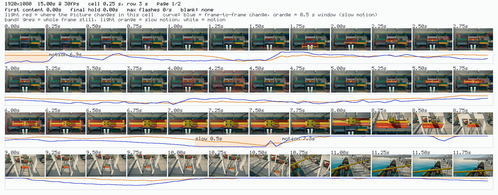
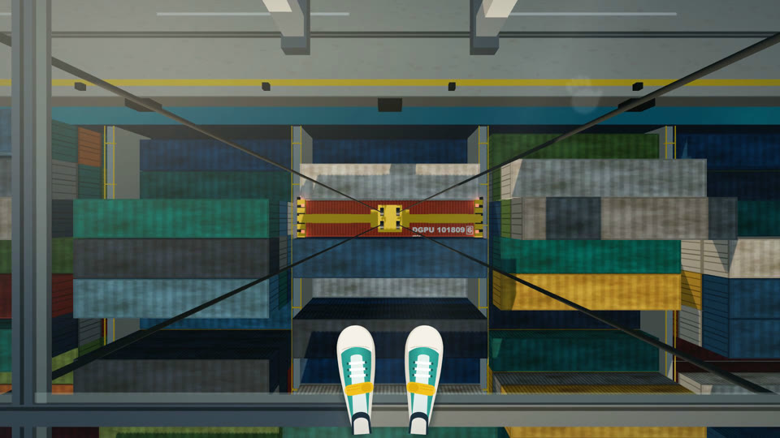

票 14 第 3 步：提示词按重判结论重写完毕，两个发布包已重新生成，测试全部通过。票 12、票 14 已关闭。
另外 typecheck、check:plugins 都通过；Claude 和 Codex 两个发布包都已重新生成。
TypeScript 版时间总览在 5 支片上的全部数值；定态帧的文件名和像素也一致。
批评环（默认，全自动）或亲自打磨（你看片说的话原样转给乙）。委托时选。
整份删除，归档在 docs/archive/kit-2026-09/，附删除理由。
节奏刀那一步没了。锁定时长改成乙的承诺：内容放不下时，乙报 duration blocked，由你决定放宽还是保留。
比例、时长、文案；新增一问"谁来打磨"，默认批评环。
列 N 个想法不同的方向，每支 draw 领一个，各自渲出 r1 预览。
默认你看视频挑，可选 AI 盲选。只有被选中的那支自检定稿。
甲只看像素、报现象，乙决定改不改，直到甲收敛。不突破上限，但安全、省心。
不派甲。你看片后主动说的话原样转给乙，乙改完报 revision K done。从不问你缺什么、怎么改。
| 环节 | 改动 |
|---|---|
| 甲 |
|
| 盲选 |
|
| 乙 |
|
| create |
|
| 工具 |
|
| Codex 端 |
|
| 其他 |
|
用 Claude 发布包里的 render-arm 重渲 run-kiv（15 秒，1920×1080）。渲完自动生成 2 页时间总览和 8 张定态帧，分析用时约 2.5 秒。

overview-1.png：每 0.25 秒一格，一行 3 秒。蓝线是逐帧变化，橙线是 0.5 秒窗口；色带表示整幅静止、慢动、运动。黑场、闪烁、定态里的抖动、短命内容都标在同一条时间轴上。
settle-02_t03.50s.png：每个定态最平稳处一张原分辨率帧，用来判构图、排印和质感。本图为展示缩小过，评审拿到的是原尺寸。新增：甲和盲选的 agent 文本必须与协议逐字一致；不得残留装备、节奏刀、条带；打磨两种模式的顺序和守卫；时间总览在合成片上读对黑场、定格和运动。
v01、v02、γM、V9 片段、V6 共 273 个数值全部一致；V9 全长额外 264/264。定态帧逐字节一致。
check:plugins 确认两个发布包和源文件一致；类型检查无错误。
插件目录里的 render-arm 能找到同目录的 time-overview，并在 workspace 依赖下跑通。
README、WHY、DEVELOPMENT-JOURNEY 还写着装备和节奏刀；docs/CODEX-*.md 也有约 30 处过时段落，行号已记进票 14。建议等套件定版后一起重写，免得再改一遍。
票 07 还开着："过"的标准、什么时候算套件定版，都还没定。
都还在本地分支 feat/equipment-baseline-m 上，需要你同意才推。
执行诊断的结论是：好想法交给默认执行就能到 5 分，瓶颈在上游。两条路：回概念阶段（研究为什么想法很少到 5 分），或直接进发行验收。
我建议先定票 07 的验收规则。规则定了，才知道现在的套件离"过"还差多少，再决定要不要回概念阶段。